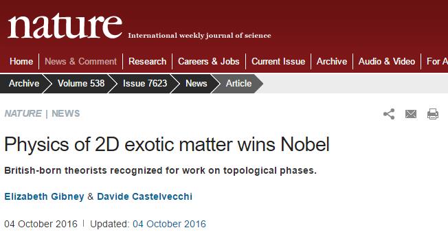
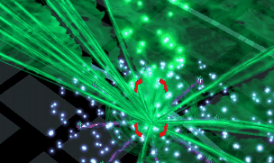
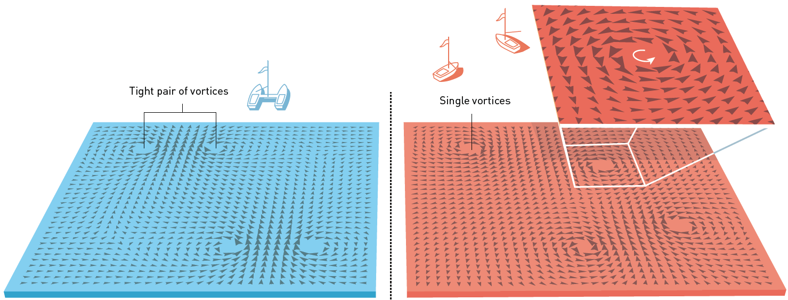
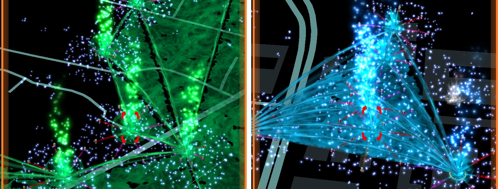

Rubilacxe
Chinese enlightened agent, Independent XM researcher
Oct 21, 2016
In 2012, the existence of Exotic Matter (XM) was discovered by researchers at European Organization for Nuclear Research (CERN), and more and more attraction, of both researchers and public, has been drawn to this new type of energy since then. Having different ideas of XM and human civilization, people have divided into two factions, and both have made great contribution in exploring XM, e.g. discovering new portals, building enormous control fields, or attending anomalies with thousands of agents, during the past four years. However, despite the numerous practices people have done, the answer to a fundamental question is still unknown to many of us: what is the essence of XM?
In 2016, The Nobel Prize in Physics was awarded to Prof. T, Prof. H and Prof. K, for their theoretical discoveries of topological phase transitions and topological phases of matter, also known as the Exotic Matter[1] (Fig.1). Their works can be traced back to 1970s, which means that the theoretical study of XM, even though they didn’t know what XM is back then, has begun long before it became publicly well-known. In this article, I would like to study the essence of XM basing on their works, and hope to help agents understanding the mechanism behind it.
Fig.1: The study of Exotic Matter wins Nobel prize, reported by Nature[2].
In general, XM is a type of quantized energy with an intrinsic directivity.
It is very difficult to convert XM into other forms of energy, and although can somehow interact with other matters, the interaction is too weak to be observed in human history. It was not until 20 century that people began to realize the existence of XM, and the success in controlling XM only came a few years ago. Nowadays, we can control and manipulate XM through our scanner, though the mechanism behind this technology is still not very clear.
Despite the difficulties in converting XM into other forms of energy, scientists have found that energies in XM form have a quantized unit, namely 1XM. Therefore, it is natural to assume that there exists some kind of particle, XMion, which carries 1XM ofenergy, but this particle hasn’t been directly detected so far. However, if there are XMions, it shall possess some specific properties:
1. Besides mass, spin and other well-known intrinsic properties, XMions possess a special intrinsic property called exoticity. Similar to left-handed and right-handed chirality, there are also two types of exoticity, which is called enlightened and and resistance. The enlightened XM can arouse human potential more effectively, which the resistance one is somehow repulsive from human minds. These two types of XM generally mix with each other in nature, hence the XM we observed is usually exotically neutral, as the one flows out from gray neutral portal (Fig.2). Nevertheless, when a great amount of XM with the same exoticity is injected into a gray portal, the long-range ordered state of XM will be induced, and the XM in this portal will all become the same type of XM with the injected one (Fig.3).
Due to the strength of interaction with human minds, some researchers suggest that human minds are also of enlightened to some extent, but there is not any prove of this assumption. Another interesting conjecture is that XMions are the basic particles of human minds, but this assumption is also to be verified.

Fig.2: Gray portals of exotically natural XM.

Fig.3: Enlightened XM and resistance XM.
2. XMions have an intrinsic directivity. This properties can be illustrated by the link between two portals. From Fig.4 we can see that XM will flow in these links, and the direction is only associated with the choice of the starting portal (the remote portal) and the end portal (the one where the scanner is), and is independent from the XM density of each portal. This is because that a large amount of XMions tends to stay in a spatial disordered state, but when a link is established, a channel is built between portals, and XMions in this channel will become ordered and transport from one portal to another. Furthermore, establishing the link requires to channel some XMions from the starting portal to the end portal, hence the flow of XMions is always in the same direction.
Fig.4: The flow of XM in links.
Although has the power to affect human mind, this effect is too weak to be observed with a small amount of XM. As a result, XM has been unknown to human races for many centuries, even though it is all over the earth.
However, due to the intrinsic directivity and the hairy ball theorem, there will always be at least one tuft of XM at one point on the surface of the earth. The XM density at this point is incredibly high, and thus forms what we call a “portal” (Fig.2 and 3).
As simple as it is, this theorem is not yet complete: why the number of portals always has a positive correlation to the population density? This question can be answered with the work of Prof. T and Prof. K in 1960[3]. Due to the so called “spontaneous symmetry breaking”, such tufts will always form vortices. When the mind unit (MU) density is below a critical value, this kind of vortices always comes in pair with opposite directions (clockwise and anticlockwise). In this case, XM can flow through between these two vortices, and cannot form a portal (left panel of Fig.5). However, when the MU density is above the critical value, there can exist single vortices, or “free vortices” as a comparison to the “bonding vortices” in the low MU density case, and hence forms portals (right panel of Fig.5). These two types of situations are different in the sense of topology, and cannot transform into each other continuously. Hence the corresponding phase transition, namely the XM-KT transition, is a topologically nontrivial phase transition.
Fig.5: Vortices and topological phase transition. The vortices in left panel forms a bonding pair, and a channel is generated within a pair of opposite vortices. In the right panel there are single vortices, which form the portals. This figure is from Ref.[1].
Since the discovery of Prof. T and Prof. K, more and more researchers were attracted to this novel “Exotic Matter”. In 1988, Prof. H proposed the well-known H model[4], which provided a theoretical inspiration to the realization of XM control. This model can realize an area covered by XM with the same exoticity (i.e. the control field), and edge states of XM with specific direction (i.e. the link) will be generated on the boundary of this area (Fig.6). The control field may also appear in multilayer, and the strength of the influence to human minds is proportional to the number of layers. This property can be described by the C number named after Prof. C, a Chinese mathematician: C number can take any integer, the absolute value of C number corresponds to the number of layers, while sign of it corresponds to enlightened and resistance XM, respectively. This quantize number is similar to the genus of spatial topology, and the associated properties are also called topological properties. The control fields of different C number belong to different topological phases, and the transitions between them is called topological phase transitions.
This property itself is not so rare, in fact, the quantized number of control field layers is the result of the exotic quantum Hall effect, the XM version of the quantum Hall effect discovered by German physician Prof. v.K[5]. However, due to the weak interaction between XM and other matter, this kind of phenomenon can only be observed with high energy, e.g. in strong magnetic field. But with H model, although a strong magnetic field is necessary in a unit area, we can still choose a specific gauge of it, and the overall magnetic field of the control field will be zero. By realizing this model, the XM controlling technology may finally become realistic.
In 2012, Prof. Lynton-Wolfe of NIA found that we can do this the other way around: a control field with homogeneous XM can be realized by first establishing XM links of the same exoticity. With the goodwill to human civilization, Prof. Lynton-Wolfe latter applied this into the scanner technology, but this action resulted in the dividing of human into two factions, the enlightened and the resistance, and led to endless struggle between them. This is possibly the reason why Prof. Lynton-Wolfe did not share the Nobel Prize.
Fig.6: Control fields of enlightened XM (left) and resistance XM (right).
This article briefly introduces the essence and properties of XM, the concepts of portal, link and control field, and the mechanism behind them. In short, portals come from the vortices induced by the directivity of XM (or XMions), while the properties of control fields are associated with the exoticity of the boundary links. These properties can both be described by topology, thus we call them topological phases and phase transitions.
As inexperience as the author is, this article may not be completely correct. Nevertheless, I hope it can help us focus more on the research and exploring of XM itself, instead of losing ourselves in fighting each other. After all, without truly understanding and controlling XM, we will all be slaves in the end of the day, whether the shaper and Jarvis prevails, or the N’zeer and ADA dominates.
@Rubilacxe would like to thank XM researchers @pluto, @StarVoyager, @joyjy and @shizhao for their helpful discussions and suggestions.